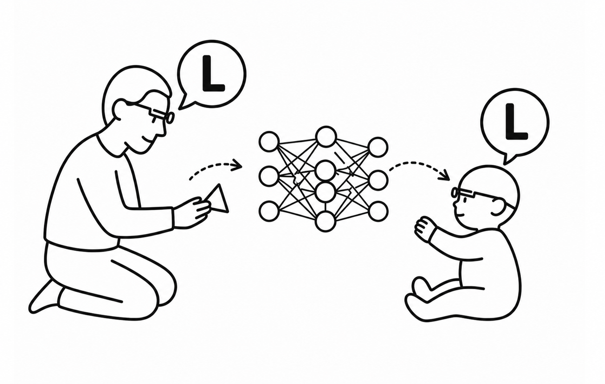
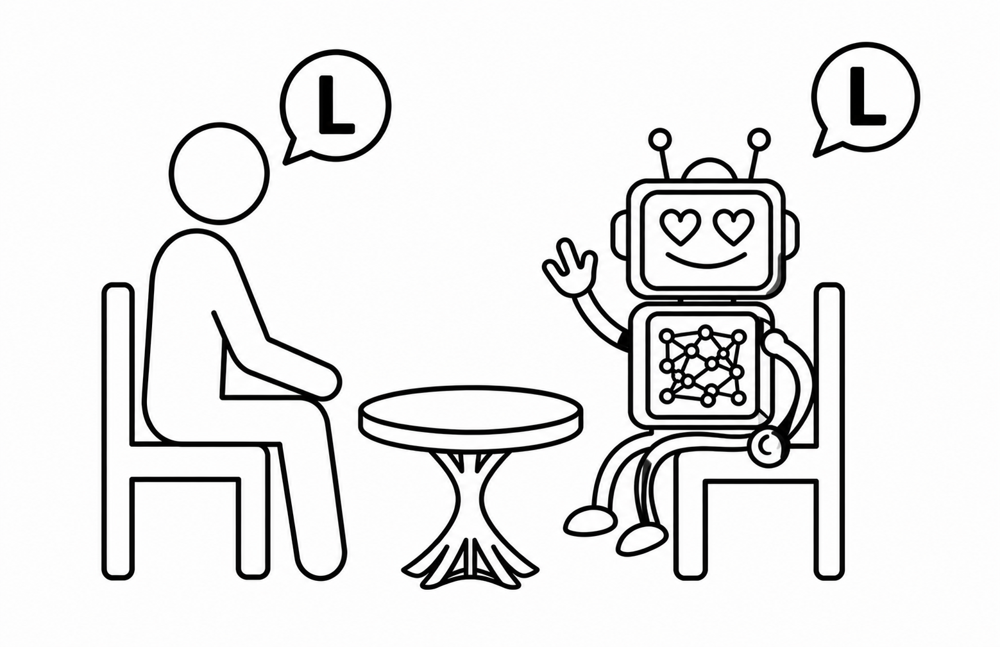

Language has been at the core of my research from the very start. In my current work, I study language as it's used in the real world—how it plays out in everyday life and how it interacts with broader aspects of cognition, including social and physical reasoning. I'm lucky to work with thoughtful, inspiring collaborators who make the work both meaningful and fun. Together, we're always learning something new about language, especially across three main directions:
Language Learning from Interaction

You've got THIS! Demonstratives as a Multimodal Pathway to Early Word Learning
Yayun Zhang*,
Dota Tianai Dong*,
Satoshi Tsutsui,
Carolina Rodríguez Chavarría,
Aslı Özyürek,
Caroline F. Rowland,
Chen Yu,
Paula Rubio-Fernandez
in prep; preprint, 2026
Embodied Inference in Social Interaction Supports Early Word Learning
Yayun Zhang,
Dota Tianai Dong,
Melina L. Knabe,
Caroline F. Rowland,
Chen Yu
in prep
The Statistics of Natural Experience Dota Tianai Dong*,
Jing Li*,
Tobias Thomas*,
Linda B. Smith
Proceedings of the Analytical Connectionism Schools 2023--2024, PMLR 320:126-150, 2026
Language and Language Models in Interaction

Do Social Micro-processes Emerge in Multimodal Language Models? A Case Study of Egocentric Referential Communication Dota Tianai Dong,
Julian Jara-Ettinger,
Jennifer Hu,
Paula Rubio-Fernandez
in prep
A Decade of Comparing Brains to DNNs: Progress and Perspectives
Lea-Maria Schmitt*,
Dota Tianai Dong*,
Emin Celik*,
Floris P. de Lange,
Mariya Toneva
in revision